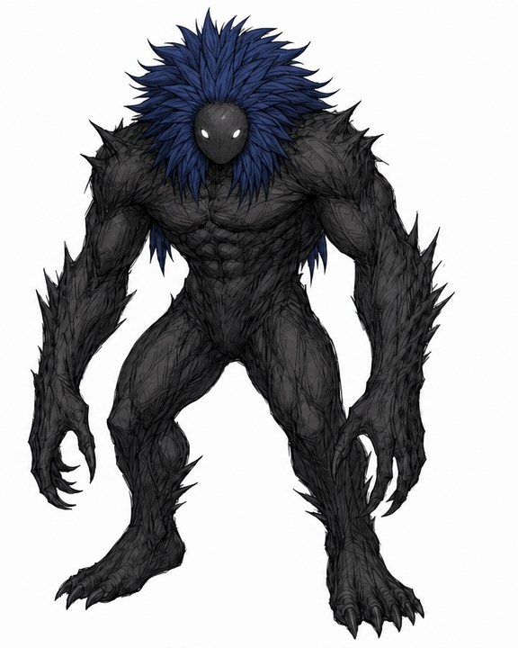
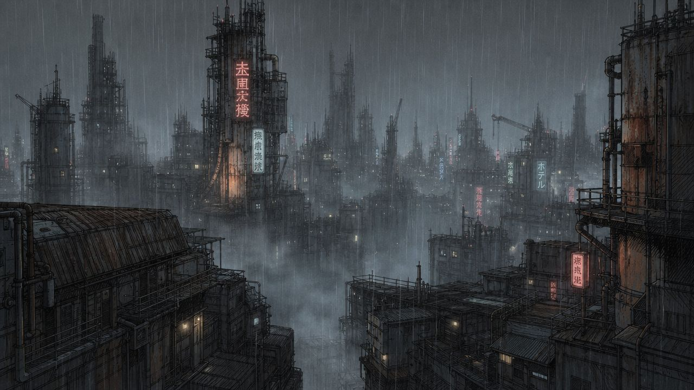
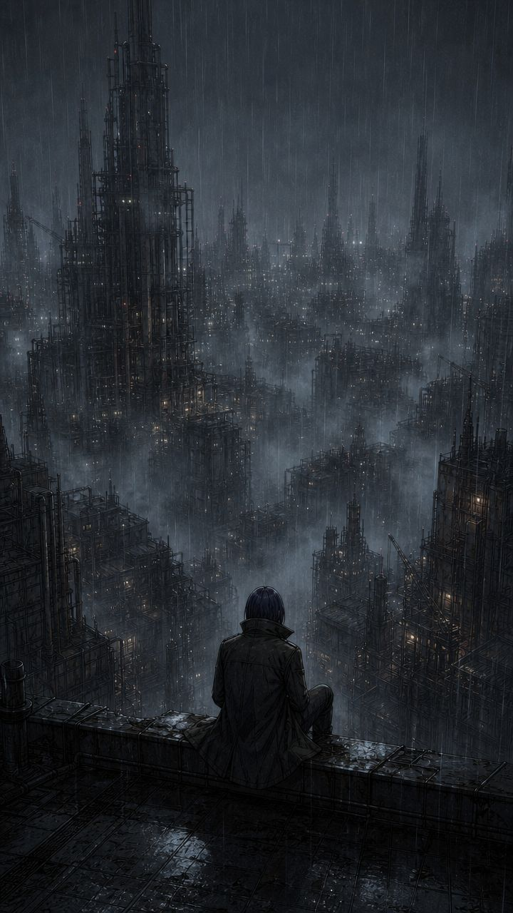
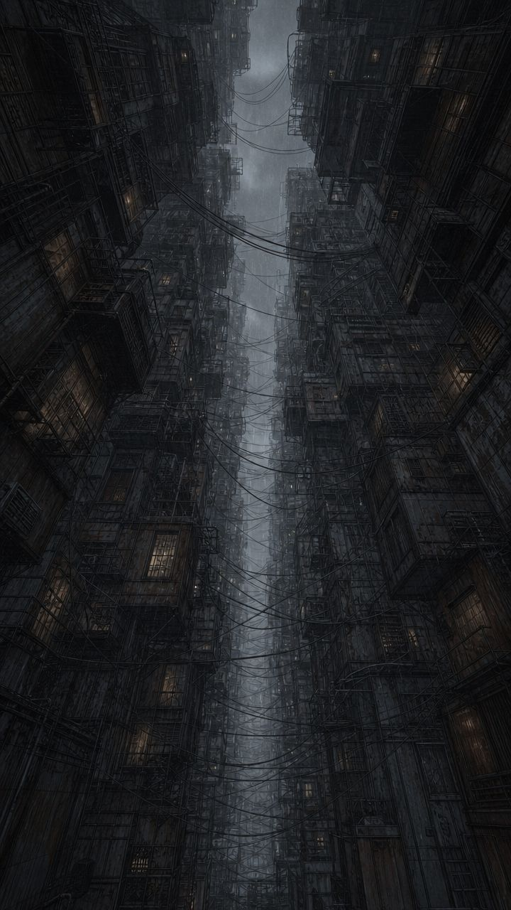
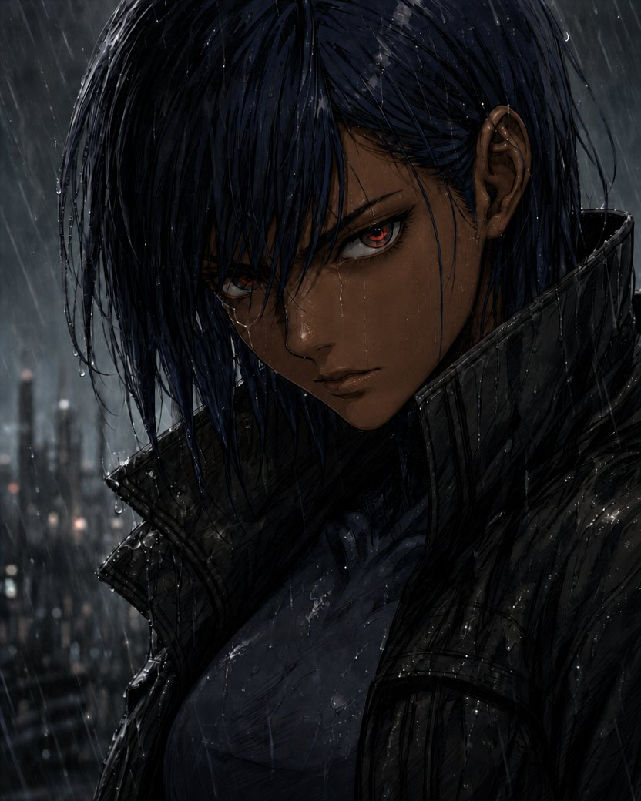
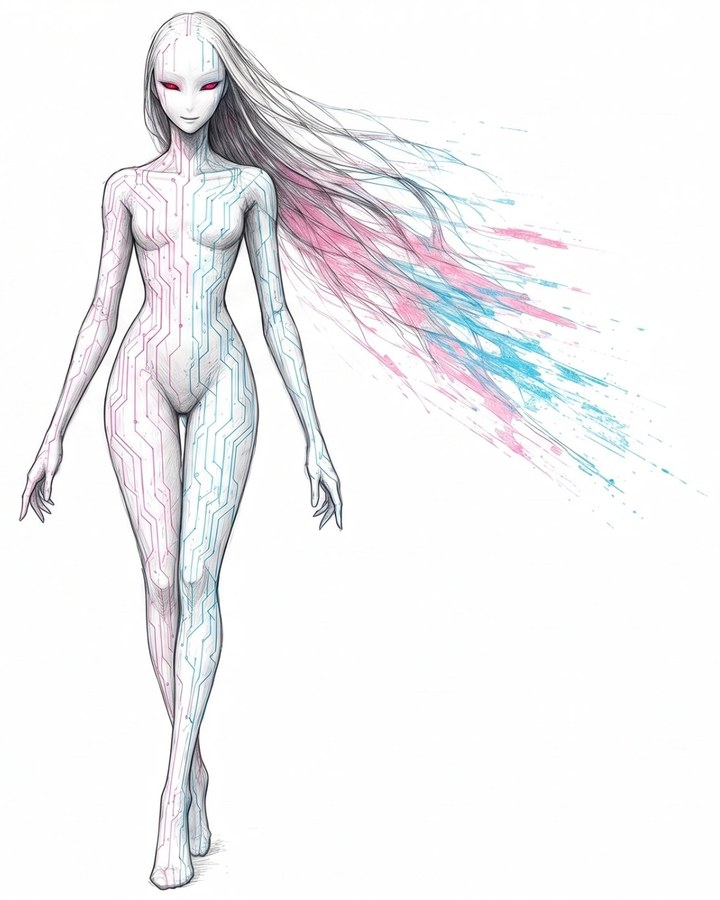
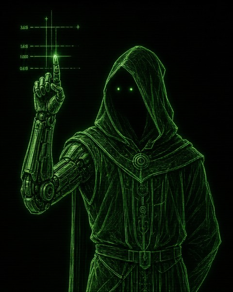
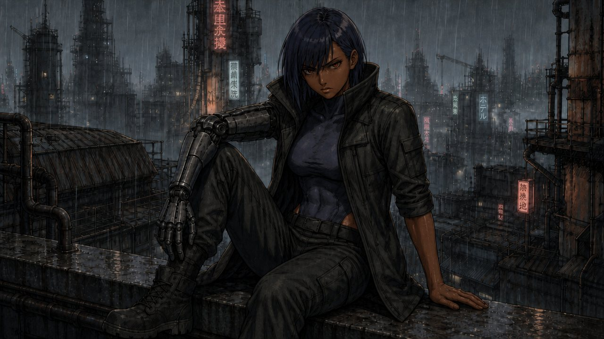

Havoc
Offense
Aggression and kinetic threat-response. When Havoc surfaces, the world snaps to heavy black ink.

[ STORAGE: 12 FLUX REMAINING ][ RENT DUE: 100 FLUX ]
Eight hours. Four fractured minds. One militarized corporate state.
A data courier carries a decaying cyber-weapon in her head. She has eight hours to reach the city's core and get it out.
Forcibly injected with a decaying, mind-splintering cyber-weapon, a cynical data courier has exactly eight hours to breach a sovereign corporate state and infiltrate its mainframe before her brain liquefies.
Thirty years ago, corporate syndicates and rebel hacker coalitions tore the global network apart. One company, OmniNexus, walked out of the wreckage owning the grid, the automation, and the data. It poured concrete over the ruins and built a sovereign state on top, then called it the Iron Expanse.
Dean is a freelance data courier with one rule: never look at the payload. Then a dying syndicate boss injects hers straight into her skull, and starts the clock.
The code doesn't stay in one piece. It splits into three voices that all want the wheel. She has eight hours to cross six districts, one fortress bridge, and a corporation that will burn whole blocks to stop her.

Six districts, one direction, and a clock that doesn't stop. Each hour takes Dean closer to the center.
Subterranean trenches and slums. Where the run begins.
Industrial deep refineries, toxic air, and droids that never stop working.
A subaquatic rail line under the bay. No signal, no eyes, and no way out if something goes wrong.
A lawless basin of floating night markets, built over the crater the Data Wars left behind.
A fortress bridge bristling with automated guns, and the last wall before the capital.
The central citadel and the OmniNexus mainframe. The clock runs out here.


Freelance data courier, age 22
Hard-bitten, practical, and out of options. Dean has no cause and no interest in who rules the Iron Expanse. She's running because in eight hours the weapon in her skull will kill her.
Don't look at the payload. Don't ask who sent it. Never pick a side.
The weapon split itself into three. Each one has its own way of surviving, and each one changes how the world looks when it takes over.

Offense
Aggression and kinetic threat-response. When Havoc surfaces, the world snaps to heavy black ink.

Deception
Sensory misdirection and radar cloaking. When the Siren surfaces, light smears and the city blooms neon.

Analysis
Tactical pathfinding and hacking. When the Scholar surfaces, the world resolves into green phosphor lines.

Follow along for release news and the first look at every new chapter.
Links go live with the first chapter.